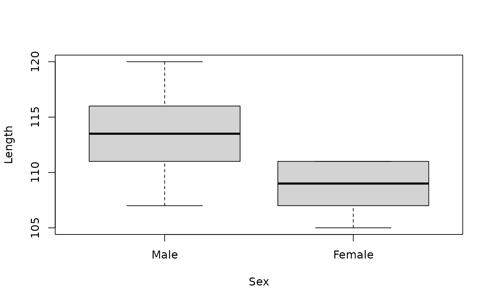

Mandible lengths (in mm) for male and female golden jackals (Canis aureus)
from a collection of specimens in the British Museum of Natural History,
London, UK.
A data frame with 20 observations on 2 variables:
LengthA numeric vector containing mandible lengths in mm.
SexA factor with levels Male and Female.
Source
The data were manually transcribed from Manly (2007).
References
Higham, C.F.W., Kijngam, A., and Manly, B.F.J. (1980). An analysis of
prehistoric canid remains from Thailand. Journal of Archaeological
Science, 7, 149–165.
Manly, B.F.J. (2007). Randomization, bootstrap and Monte Carlo methods in
biology, third edition. Chapman & Hall/CRC, Boca Raton.
Examples
data(jackal)
str(jackal)
#> 'data.frame': 20 obs. of 2 variables:
#> $ Length: num 120 107 110 116 114 111 113 117 114 112 ...
#> $ Sex : Factor w/ 2 levels "Male","Female": 1 1 1 1 1 1 1 1 1 1 ...
## boxplot of mandible length vs sex
plot(Length ~ Sex, data = jackal)
